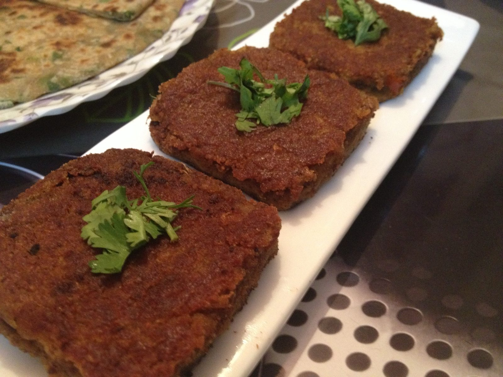

Galouti Kebab
Minced mutton kebabs so soft they collapse on the tongue, from the Nawab's kitchen

Contains: milk, tree nuts
Checked against the ingredient list for ten allergens: milk, egg, fish, crustaceans, tree nuts, peanuts, sesame, mustard, soy and gluten. Brands vary, so read the label on anything new to you.
Ingredients
Quantities for 4.
- 500g, finely minced twice Mutton
- 2 tbsp paste Raw Papayathe tenderiser that gives galouti its name
- 4 tbsp Ghee
- 2, sliced and fried till brown (birista) Onion
- 2 tbsp, ground Cashew
- 1 tsp Garam Masala
- 1/4 tsp Mace
- a scraping Nutmegoptional
- 4, ground Cardamom
- 1 tbsp paste Ginger
- 1 tbsp paste Garlic
- a pinch in warm milk Saffronoptional
- 1 tbsp, roasted Besanonly if the mix will not holdoptional
- to taste Salt
Cookware
stovetop, tawa, blender
Before you start
- Galouti was reputedly made for a Nawab who had lost his teeth, so texture is the whole point: the mince must be ground to a paste, not merely chopped.
- Raw papaya paste is the tenderiser. Do not overdo it or the meat turns mushy, and do not marinate longer than an hour.
Method
- Blend the mince to a smooth paste with the papaya, ginger and garlic. Rest 45 minutes, refrigerated.
- Fry the sliced onion in ghee until deep brown, drain, cool and crush to a powder. This birista carries most of the sweetness.Browned, not burnt. Bitter birista ruins the kebab.
- Work the birista, ground cashew, garam masala, mace, nutmeg, cardamom, saffron milk and salt into the mince. It should be soft but hold a shape; add the roasted besan only if it will not.
- Chill the mix 30 minutes, then shape into flat discs about 6cm across and 1cm thick.
- Fry on a tawa in ghee over low-medium heat, 3-4 minutes a side. Turn once and gently, they are fragile.Low heat: high heat sets a crust before the centre cooks.
- Serve immediately with ulte tawe ka paratha or plain sheermal.
Safe temperatures: Minced meat is done at 71°C / 160°F all the way through. Reheat leftovers to 74°C / 165°F. FoodSafety.gov
Storage
Best straight from the pan. The raw mix keeps 24 hours refrigerated and shapes better cold; cooked kebabs reheat poorly and dry out.
Nutrition Medium estimate
High protein: 29 g a serving, 34% of the calories
| Per serving220 g | Per 100 g | |
|---|---|---|
| Calories | 340 kcal | 155 kcal |
| Protein | 29.0 g | 13 g |
| Carbohydrate | 12.6 g | 6 g |
| of which sugars | 3.9 g | 2 g |
| Fibre | 2.2 g | 1 g |
| Fat | 19.4 g | 9 g |
| of which saturated | 9.5 g | 4 g |
| of which unsaturated | 8.3 g | 4 g |
Ingredients given to taste count as zero, so the real figures run a little higher. Nearest database match used for garam masala, mutton. Estimated from raw ingredients using USDA FoodData Central.
Times, yields, allergens and nutrition are guidance. Use your own judgement on doneness and on storing. More in About.